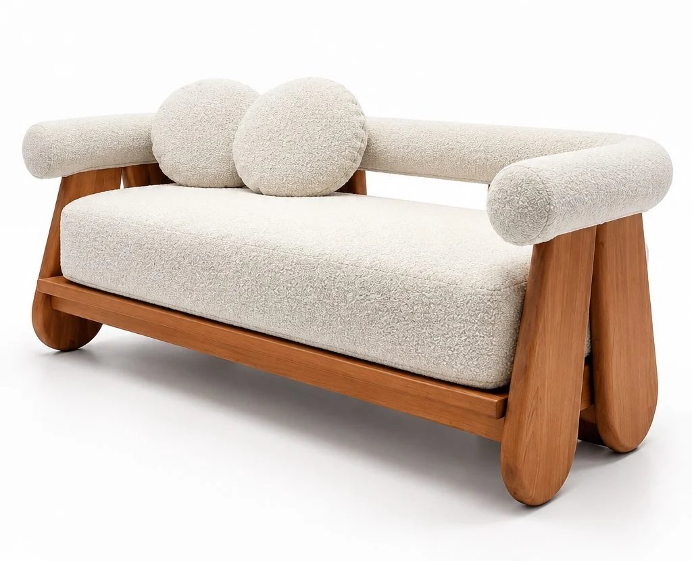

Owen Kok · Singapore
Expression
through Impression
Furniture and objects shaped by observation, culture and everyday contradictions.
VIEW WORK →
SWEET TOOTH COLLECTION — 2024 ↗Selected Works
VIEW ALL →An object first captures attention through its presence, before revealing the thought and emotion behind it.
O/K · Design philosophy